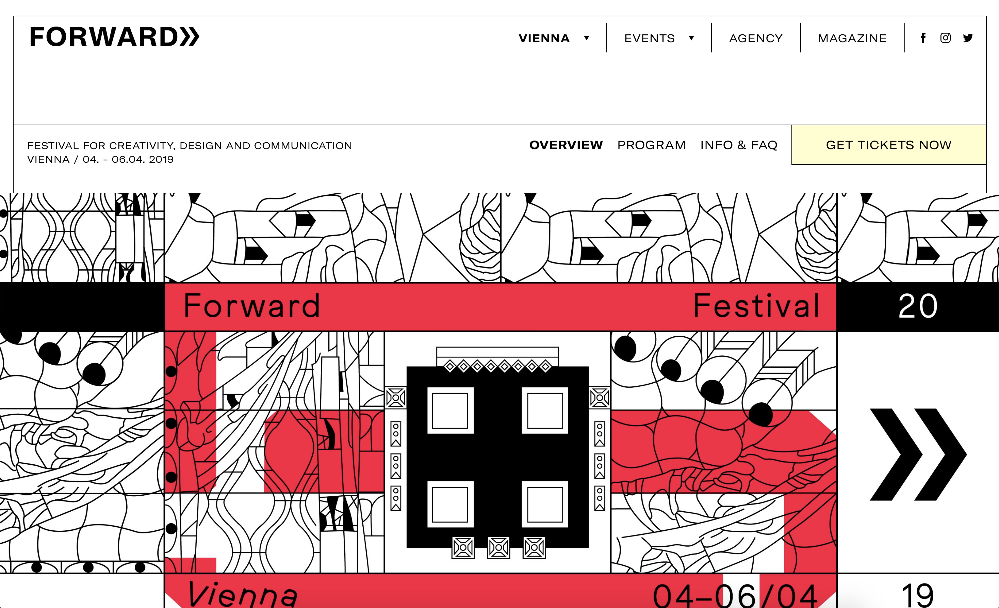
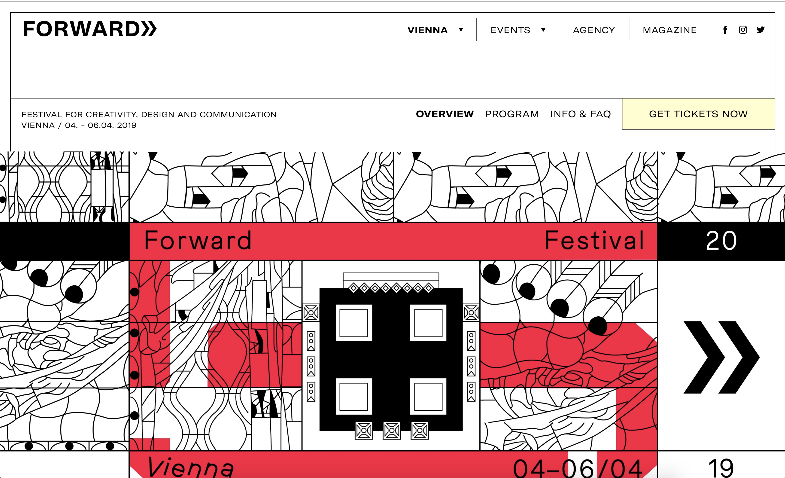
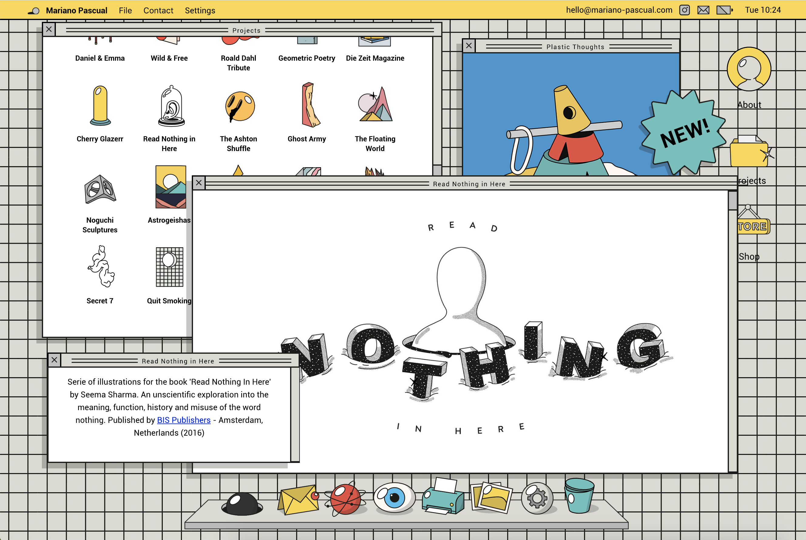
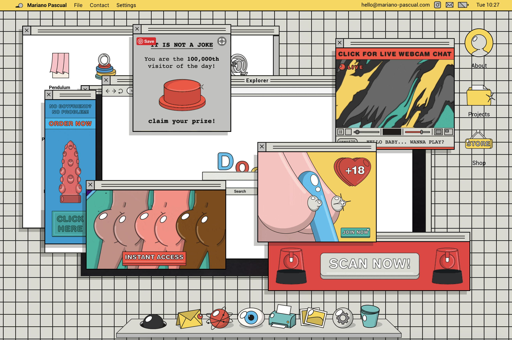
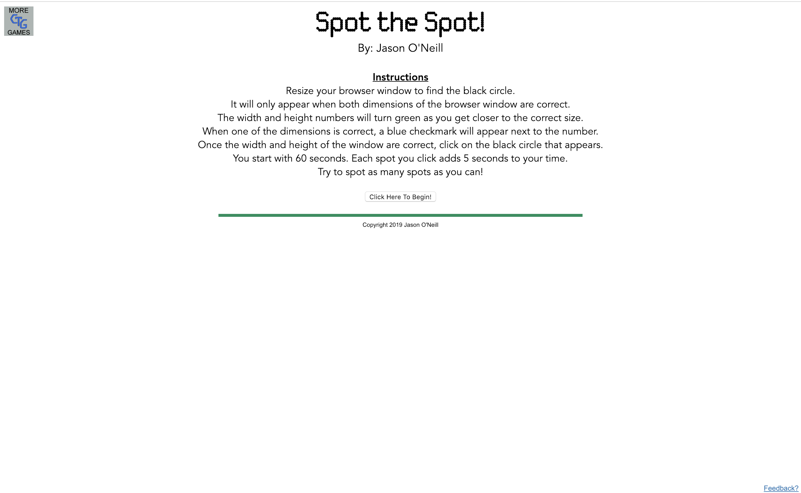
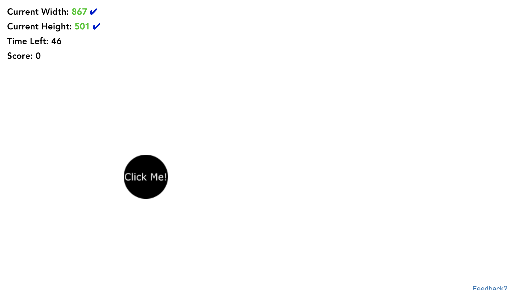

Forward Festival
 

This website is for a festival called forward. The purpose of this site is to inform viewers about the festival including events, dates, and other information.
On all pages there is a header that holds main navigation of cities, events, the agency, and socials. The different tabs bring up corresponding information or links.
Mariano Pascual
 This website is a portfolio site for Mariano Pascual.
The webpage mimics a desktop with a dock at the bottom and different windows popping up. One feature I enjoyed was when you click on browser it comes up with a search engine and then a whole bunch of ads. Each icon brings the user new options, it is rather straight forward with how one navigates through the page since it is familiar. You can even customize the background and other options by going into settings.
Spot the Spot
 This website is a game called Spot the Spot.
The purpose of the website is to find the spot by resizing the window. There is a simple button to start the game. After you resize the window until the current height and width turn green the spot shows up and you click on it to do it again.